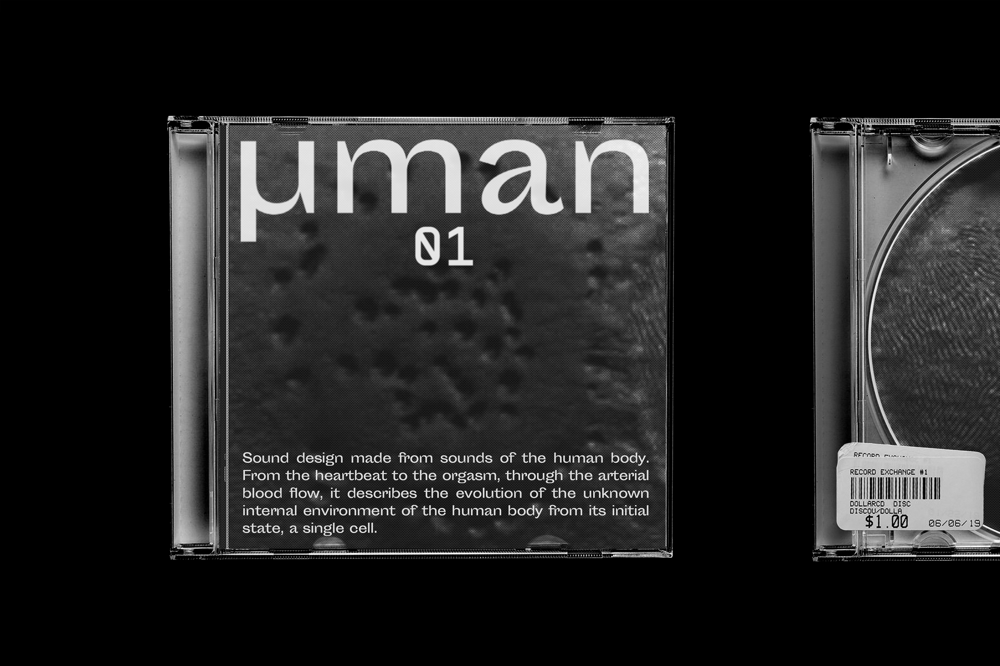
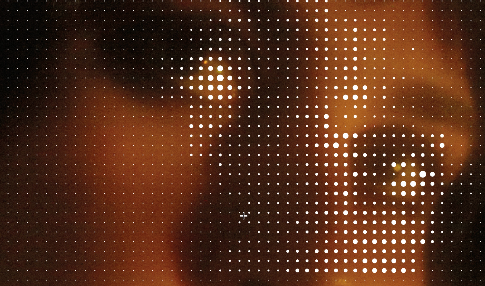
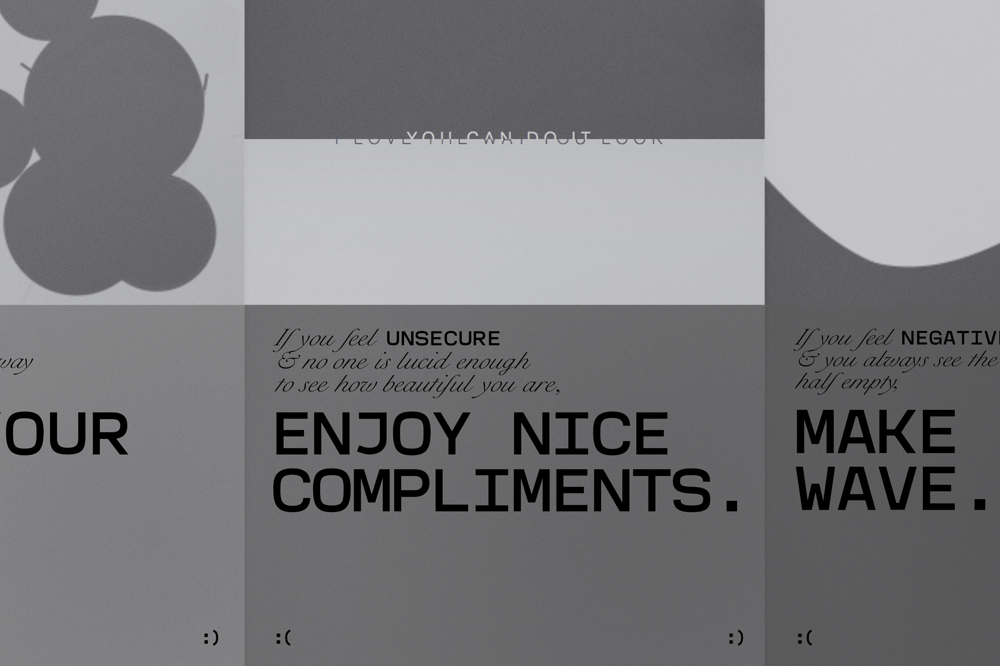
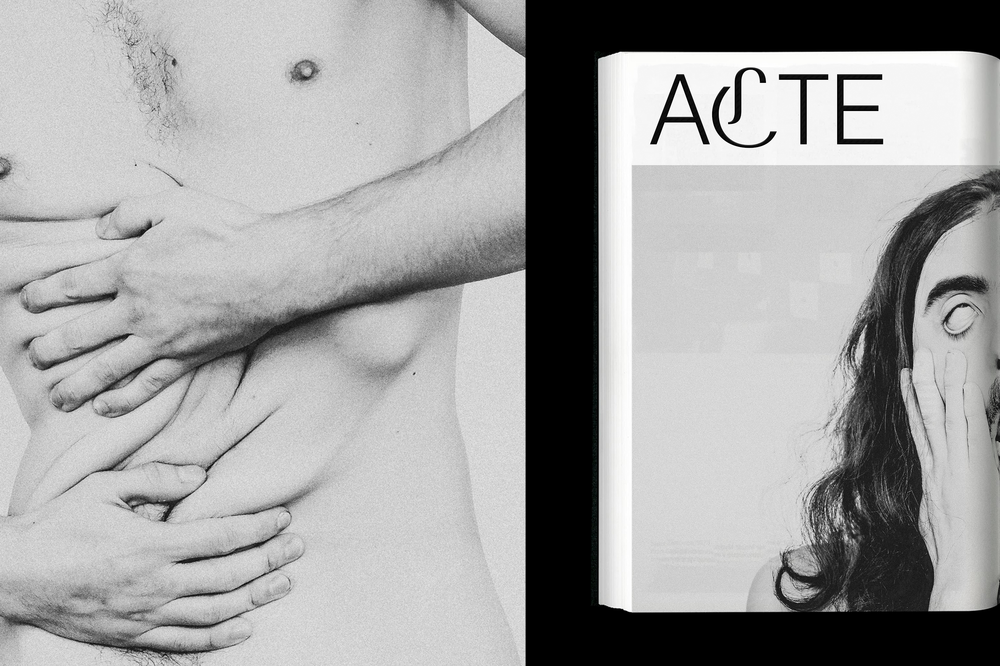
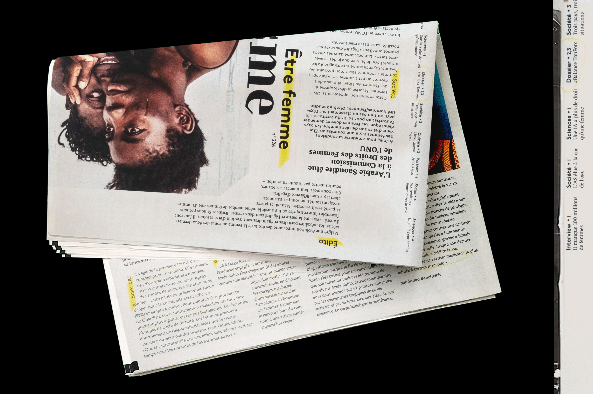
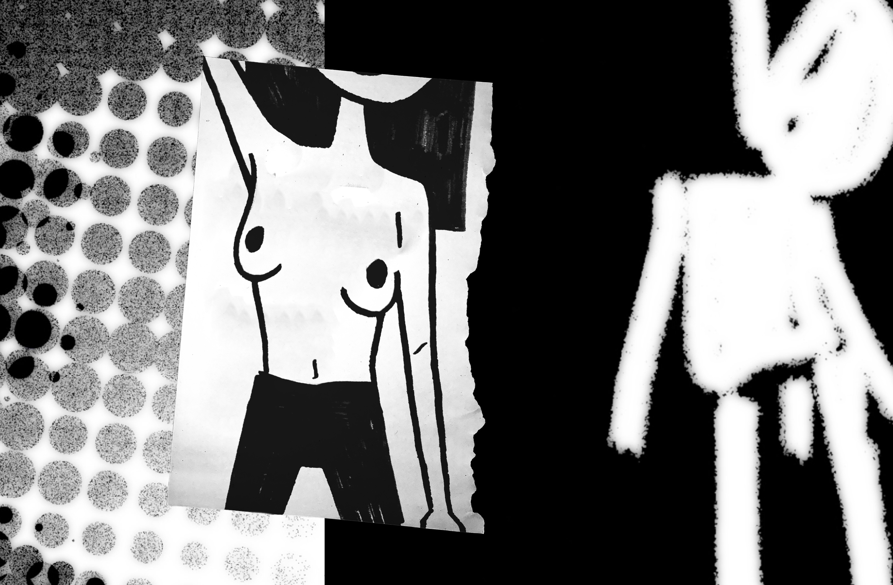
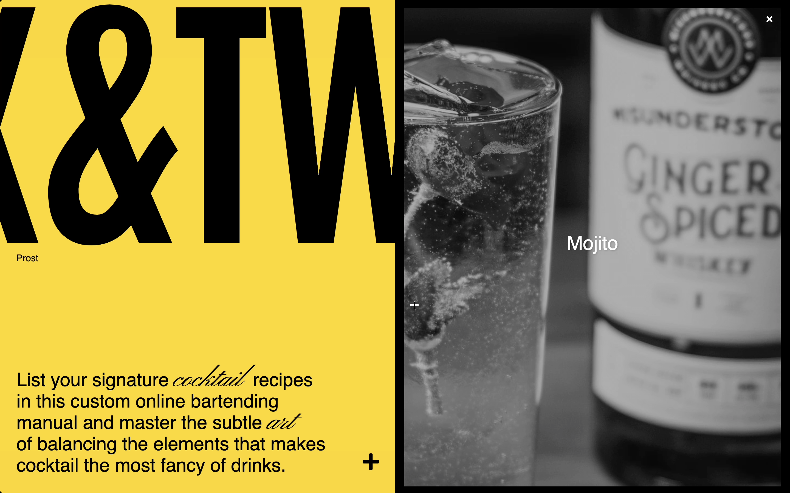

-
EUGENESIS
EDITORIAL DESIGN • PHOTOGRAPHY
-
PANNORMA
GRAPHIC & EDITORIAL DESIGN • AR

-
UMAN
SOUND & GRAPHIC DESIGN
 -
KYOTOGRAPHIE '20
WEB DESIGN
(ENG) EXIT is a poetic outlet for negative thoughts. Bursting bubbles to ward off boredom, exploding anger like a soap bubble, receiving endless compliments, or making waves in a half-empty glass to see it half full. No more negative thoughts!
(FRA) EXIT est un exutoire poétique pour les pensées négatives. Eclater des bulles pour parer son ennui, exploser sa colère comme une bulle de savon.
-
EXIT
GRAPHIC & WEB DESIGN
MAY 19
POETIC OUTLET FOR NEGATIVE THOUGHTS
-
LE ROI SE MEURT
EDITORIAL DESIGN • PHOTOGRAPHY
(ENG) EXIT is a poetic outlet for negative thoughts. Bursting bubbles to ward off boredom, exploding anger like a soap bubble, receiving endless compliments, or making waves in a half-empty glass to see it half full. No more negative thoughts!
(FRA) EXIT est un exutoire poétique pour les pensées négatives. Eclater des bulles pour parer son ennui, exploser sa colère comme une bulle de savon, recevoir des compliments à n'en plus finir, ou encore faires des vagues dans un verre à moitié.
-
SYNMORPHE
WEB DESIGN
-
PRISME
EDITORIAL DESIGN
 -
L'IMPORTUNÉ
ILLUSTRATION • MOTION DESIGN
 -
MIX&TWIST
WEB DEVELOPMENT & DESIGN
 -
PYC
WEB DEVELOPMENT & DESIGN
-
PHOTO GALLERY
LOGO GALLERY
ABOUT
(ENG) EXIT is a poetic outlet for negative thoughts. Bursting bubbles to ward off boredom, exploding anger like a soap bubble, receiving endless compliments, or making waves in a half-empty glass to see it half full. No more negative thoughts!
(FRA) EXIT est un exutoire poétique pour les pensées négatives. Eclater des bulles pour parer son ennui, exploser sa colère comme une bulle de savon, recevoir des compliments à n'en plus finir, ou encore faires des vagues dans un verre à moitié vide pour le voir à moitié plein. Fini les pensées négatives !